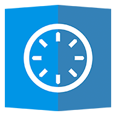

С помощью EDS (Encrypted Data Store) вы можете скрыть и защитить ваши файлы от несанкционированного доступак ним, поместив их в зашифрованный контейнер. Поддерживаются контейнеры формата VeraCrypt(R), LUKS, EncFs, TrueCrypt(R), CyberSafe(R). Чтобы получить доступ к файлам внутри контейнера, можно открыть контейнер во встроенном менеджере файлов EDS, либо можно через EDS присоединить файловую систему контейнера к файловой системе вашего устройства ("смонтировать" контейнер, для этого требуется root доступ к вашему устройству).